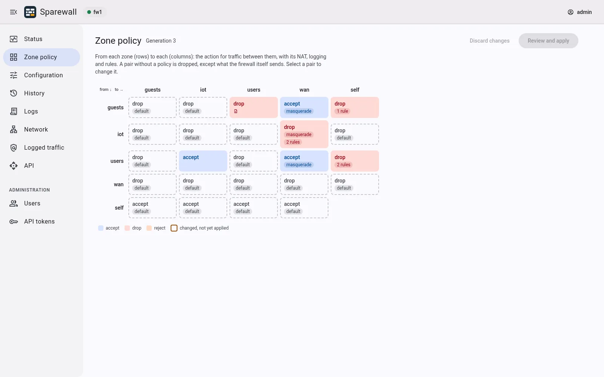
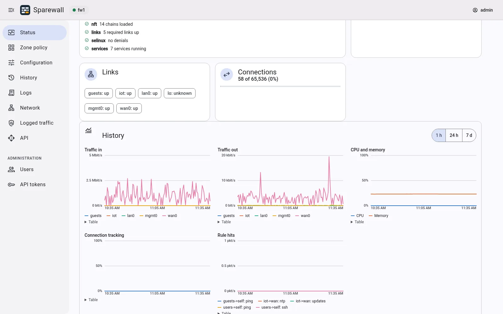
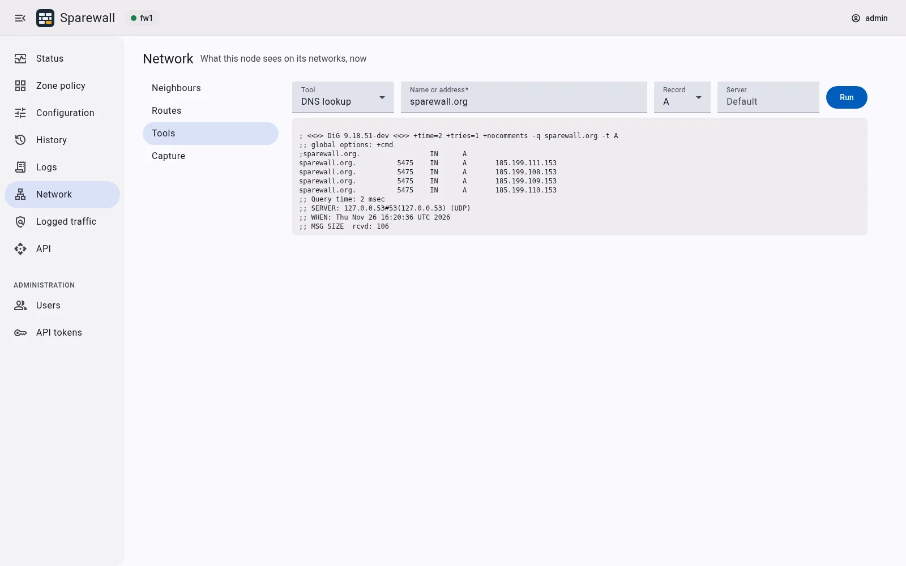
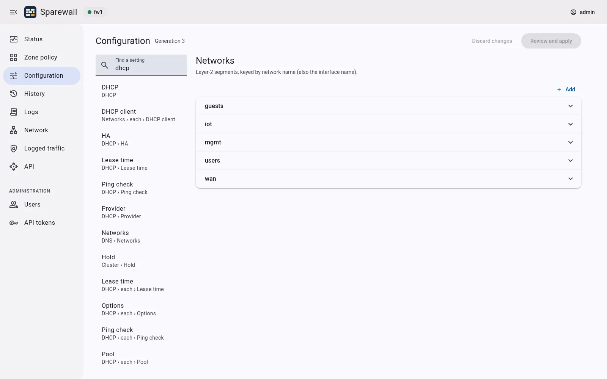
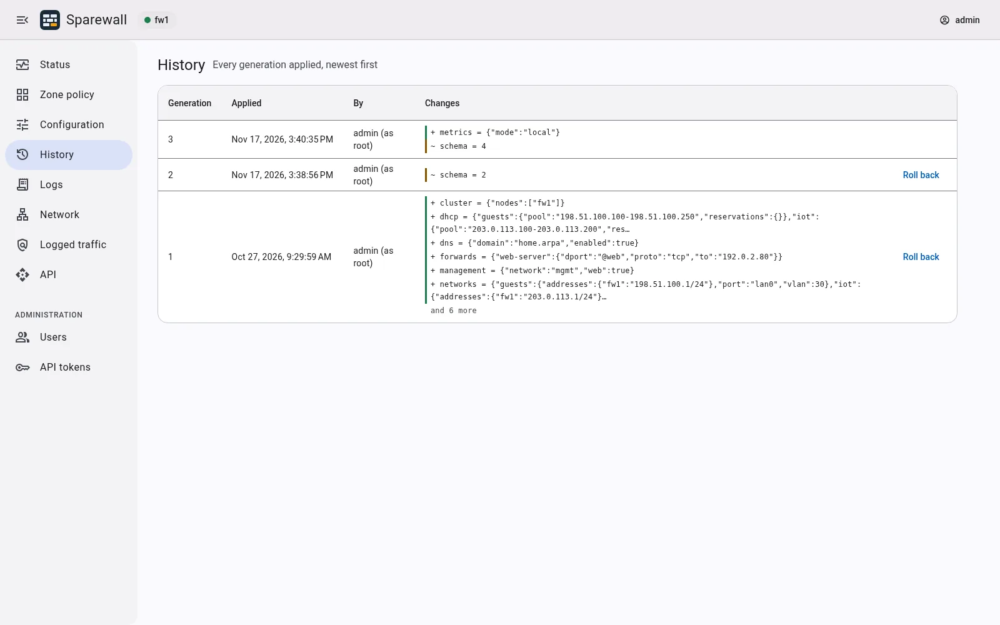

Open-source Linux firewall
One document.
One image.
One node or a pair.
Sparewall is an open-source, image-based Linux firewall. Describe the whole deployment in one versioned document; every change is validated, applied atomically, and rolled back unless you confirm it. Drive it from the CLI, the HTTP API or a web UI.
Inside a Sparewall pair
- Zone-based firewall. Write policy between zones, once for IPv4 and IPv6; nftables enforces it, and anything not allowed is dropped.
- Designed for failover. A pair shares the gateway address. If the active node fails, the standby takes over and connections carry on.
- Secure by default. An immutable, signed bootc image, internal services written in Rust, and replication between the nodes inside WireGuard.
- DHCP and DNS in containers. ISC Kea and Unbound run as containers, pinned by digest.
- WireGuard VPNs. For remote users, to other sites, and out through a VPN provider. Peers are entries in the document, and each VPN is a zone like any other.
- Metrics and backups. Prometheus metrics, with their history kept on the node and charted in the web UI if you like, and encrypted configuration backups with restic.
- API-driven. The CLI, your scripts and the web UI all drive the same API. The web UI stays off until you turn it on.
A firewall you can reason about
Sparewall treats a firewall like any other piece of infrastructure: declared, versioned, reviewable, and safe to change.
Upgrades without surprises
- Rolling, health-gated upgrades: in a pair, the backup goes first, and the master follows only once it is healthy.
- Start one from the CLI or the web UI, or let the node upgrade itself in a maintenance window. It accepts only signed images.
- A background check shows new releases in
sparewall status, the login banner and the web UI.
Pairs you control
sparewall failovermoves the gateway back when you choose, from either node.- Upgrades and configuration changes start from either node, and the pair stays in step.
- A two-NIC pair needs no VLANs. Running a pair covers the layouts and what each isolates.
Users, roles and secrets
- Named users and API tokens, each with a role: monitor, viewer, operator or admin.
- Secrets are encrypted on the node, bound to its TPM where it has one, and shared with the peer.
management.sourceslimits which hosts reach SSH and HTTPS.- The coordinator runs in its own enforcing SELinux domain, and the web UI's gateway is an unprivileged, sandboxed service.
Networking in detail
- Raw nftables rules beside zone policy, for what zones don't cover. Sparewall never flushes anyone else's tables.
- IPv6 by DHCPv6 with prefix delegation, SLAAC or static, with router advertisements inside and no renumbering at a failover.
- Rules can name a host by its suffix in a delegated prefix, and keep matching when the ISP renumbers it.
Day-to-day operations
- Troubleshoot without SSH: logs, logged traffic, neighbours and routes, ping, traceroute, DNS lookups and short packet captures, from the CLI or the web UI, and from either node of a pair.
- Backups run on a schedule and prune themselves to a retention policy; check the password from your workstation before you need it.
- Logs forwarded to any syslog collector, over UDP, TCP, TLS or RELP.
- The CLI for Linux and macOS, x86_64 or arm64, from Homebrew, with shell completions and
-o jsonfor scripts.
Planned
- Pi-hole as a containerized DNS provider.
- PXE options for network boot.
- DHCPv6 on inside networks, and IPv6 through VPN tunnels, after 1.0.
A web UI, when you want one
A node can serve a web UI and an HTTP API on its management network. Both stay off until the document turns them on with sparewall set management.web=true. SSH, the console and the CLI never depend on them.





- Each page offers only what the user's role allows, and the node checks every call regardless.
- The status page charts throughput, CPU, memory, connection-tracking table use and rule hits over the last hour, day or week, when the node keeps its metrics history.
- The Logs, Logged traffic and Network pages cover troubleshooting, down to a packet capture downloaded as a pcap. In a pair, each has a switch to the other node's view.
- Admins see when an update is available and can start the upgrade there, and manage users and tokens. A new password is hashed in the browser, so only the hash reaches the node.
- The UI loads nothing from outside the node.
- Scripts use the same API with a token:
POST /call/<interface>.<Method>, described by an OpenAPI 3.1 document at/openapi.json. The UI's API page lists every call with the role it needs and acurlexample.
How a change happens
The sparewall CLI is a thin client for sparewalld, the coordinator on each node. The coordinator is the only thing that writes daemon configuration.
- ValidateThe schema first, then semantic checks: overlapping subnets, rules naming missing zones, pools outside their subnet.
- Render and dry-runPure renderers produce networkd, nftables, keepalived and provider configuration, and each file is checked by its own tool.
- ActivateThe new generation goes live as a unit, reloading only what changed, and the confirm timer starts.
- Confirm or revertConfirm to keep it. Miss the deadline and the previous generation comes back, so a change that cuts off your access undoes itself.
- Sync the peerIn a pair, the confirmed generation is pushed through the sync tunnel and goes through the same steps on the other node.
site.yaml
schema: 1
cluster: { nodes: [fw1] }
management: { network: lan, sources: [192.168.1.10] }
ports:
fw1:
wan0: { nic: "52:54:00:aa:00:01" }
lan0: { nic: "52:54:00:aa:00:02" }
networks:
wan: { port: wan0, role: wan, dhcp_client: true,
ipv6: { mode: dhcpv6 } }
lan: { port: lan0, role: management,
addresses: { fw1: 192.168.1.1/24 },
ipv6: { mode: delegated, subnet_id: 1 } }
zones:
wan: { networks: [wan] }
lan: { networks: [lan] }
policy:
lan->wan: { action: accept, nat: masquerade }
wan->self: { action: drop }
dhcp:
lan: { pool: 192.168.1.100-192.168.1.199 }
dns: { enabled: true }shell
$ sparewall apply -f site.yaml --confirm 120
# reverts in 120s unless confirmed
$ sparewall confirm
$ sparewall set dhcp.lan.pool=192.168.1.50-192.168.1.199
$ sparewall get policy.'lan->wan' -o yaml
$ sparewall historyHow it compares
Sparewall sits beside the open-source firewalls and the vendor routers a homelab or small office would also consider. The basics, from each project's own documentation:
| Project | Based on | Core license | Runs on | Configured by |
|---|---|---|---|---|
| Sparewall | Linux (Fedora bootc), nftables | GPL-3.0-only | Your hardware or a VM | One document, through the CLI, HTTP API or web UI |
| OPNsense | FreeBSD | BSD-2-Clause | Your hardware or a VM | Web UI |
| pfSense CE | FreeBSD | Apache-2.0 | Your hardware or a VM | Web UI |
| OpenWrt | Linux | GPL-2.0-only | Routers and x86 | UCI files in /etc/config, LuCI web UI |
| MikroTik RouterOS | Linux kernel, proprietary system | Proprietary; included with MikroTik hardware, licensed per install elsewhere | MikroTik hardware, x86, VMs (CHR) | CLI, WinBox, WebFig |
| Ubiquiti UniFi | UniFi OS, proprietary | Proprietary | UniFi gateways | UniFi Network application |
Each project's core license; the packages bundled with any of them, Sparewall included, carry their own.
- The whole configuration is one document you can keep in git, and a change that cuts you off undoes itself unless you confirm it.
- The OS is an immutable, signed image: an upgrade or a rollback is a reboot.
- An active/standby pair, with connection and DHCP lease sync, is part of the open-source base.
Something here out of date? Tell us.
Who it's for
Homelabs and small offices: one node, or an active/standby pair when the network has to stay up through a failure or an upgrade.
What it runs on
- A mini PC or any other x86_64 machine, with any NIC the Fedora kernel supports.
- A VM on QEMU/KVM with virtio NICs. The image carries the QEMU guest agent; give a libvirt VM a virtual TPM.
- A TPM is optional and recommended: secrets are sealed to it where there is one.
Port layouts
- Two ports, WAN and LAN, behind a plain switch with no VLANs: the usual setup.
- One port carrying every network as a tagged VLAN.
- LACP or active-backup bonds. A pair also needs a link between its nodes for sync: a network of its own, or the LAN.
Hardware
| Minimum | Recommended | |
|---|---|---|
| CPU | 2 cores | 2 or more |
| Memory | 2 GiB | 4 GiB |
| Disk | 16 GB | 32 GB |
| Ports | One, as a VLAN trunk | Two or more |
The requirements in the documentation explain what a node uses its memory and disk for.
Install
Every release carries an installer, disk images and the CLI, with SBOMs and signed checksums. The image is also at ghcr.io/sparewall/sparewall, and nodes on the stable channel are offered each new release, or upgrade themselves in a maintenance window.
1. The CLI
On Linux or macOS, x86_64 or arm64:
$ brew install sparewall/tap/sparewall2. A node
Boot the ISO to install unattended to a blank disk, write the raw image to a disk, or use the qcow2 image for a virtual machine. All three are on the latest release.
3. Verify
Check the downloads against the project key, cosign.pub:
cosign verify-blob --key cosign.pub \
--bundle SHA256SUMS.sigstore.json SHA256SUMS
sha256sum -c --ignore-missing SHA256SUMSGetting started takes a node from a fresh install to a working firewall.
Built from standard parts
Almost everything in Sparewall is software you already know. The new code is the coordinator, its CLI and its HTTP gateway, written in Rust, and the web UI.
- systemd-networkd
- nftables
- keepalived
- conntrackd
- WireGuard
- Podman
- Kea
- Unbound
- chrony
- bootc
- Varlink
- Angular
- sparewalld
- sparewall
- sparewall-httpd
Roadmap
Sparewall is built bottom-up, and each milestone ends with tests that run in CI. Releases so far are 0.x: usable, but the schema and the APIs may still change before 1.0. The full plan is in the design document.
- 0FoundationsCI, a signed bootc image, license gates0.1.0
- 1Standalone coreCoordinator, CLI, schema v1, confirm and rollback0.1.0
- 2ServicesDHCP, DNS, time, metrics, backup and restore0.1.0
- 3High availabilityActive/standby pairs, flow and lease continuity0.1.0
- 4Access and secretsUsers and roles, ACME, remote-access WireGuard0.1.0
- 5Releases and upgradesChannels, health-gated upgrades, installers0.1.0
- 6Production0.x releases at real sites: hardening, benchmarks, documentationIn progress
- 7Web UI and HTTP APIOpt-in, with roles for every user0.3.0
Get involved
Sparewall is free software under the GNU GPL v3. Issues, design feedback and pull requests are welcome.
Read the docs
Getting started, operations, pairing, the HTTP API, and the full design.
Report an issue
Bugs, questions and ideas go on the issue tracker.
Contribute
How to build, test and send changes.